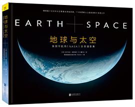

地球与太空：美国宇航局珍贵摄影集
口水了两年的摄影集总算买下来了，星云的照片比较多，看了太多NASA推特上的照片，第一次摸到实体高清图好激动
作品信息
| 作者 | 尼尔马拉·纳塔瑞杰 |
| 译者 | 董乐乐 |
| 出版社 | 北京联合出版公司 |
| 出品方 | 紫图图书 |
| 出版年 | 2015-8-1 |
| ISBN | 9787550260597 |
| 页数 | 175 |
| 装帧 | 精装 |
| 定价 | CNY 199.00 |
| 原作名 | Earth and Space: Photographs from the Archives of NASA |
最后一次看到是 2026-08-12T17:45:20+08:00 · 豆瓣原页